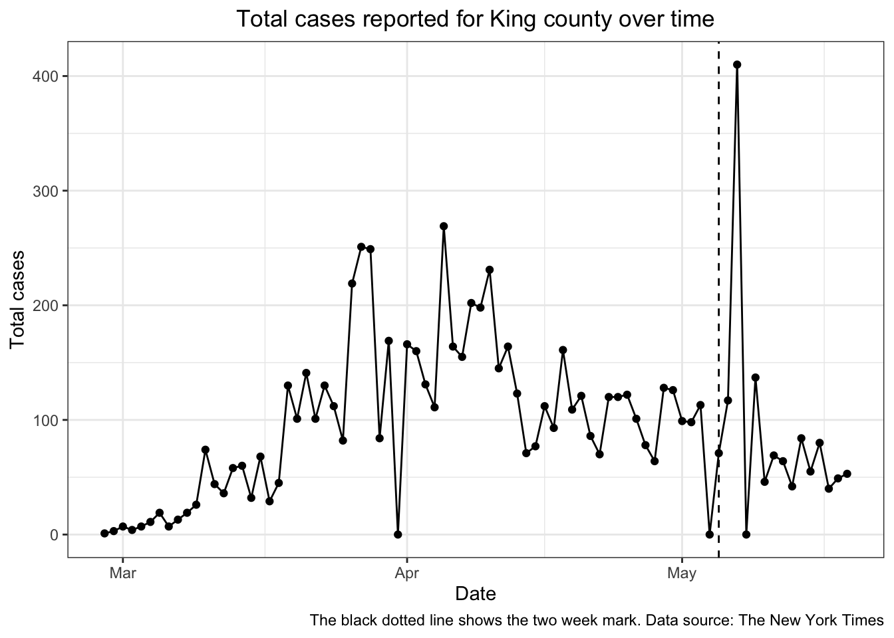

This is a computationally generated report for this county. It uses recent COVID-19 case data that is curated by The New York Times and is available in their github repository. We will calculate the percentage of people recently infected in this county and use that to estimate the chance of running into an infected person in a few different scenarios. This project was directly inspired by the work of Joshua Weitz at Georgia Tech.
Let’s start by looking at the cases reported in this county over time.

To calculate the percentage of the population that is reported infected in the last two weeks we can divide recent cases by the county population. The county reported 1,246 cases in the last two weeks and the 2019 population estimate for the county is 2,252,782.
We calculated the same percentage for every county in the US, so let’s see how this county compares.
The above plot shows that the median US county reports a recent prevalence of 0.0220%. King county reports 0.0553%, which is higher than 70.5% of all US counties.
Practically, reported cases are a lower bound for the true cases and we can’t really know the true number of cases in a county. Instead we can try to estimate the true number of cases crudely by looking at the death rate in each county. Sadly, the county reported 65 deaths in the last two weeks. If we assumed cases and deaths were constant and that the death rate of COVID-19 is 1%, then we can estimate true cases as \((\text{deaths} * 100) / \text{cases}\).
Currently, most US counties are probably undercounting cases by a lot.
By this imperfect estimate, cases in King county are being undercounted by 5x. This is not a precise estimate, but hopefully that gives you a sense for the uncertainty in the reported values. For now, let’s just consider scenarios where there are actually 5x or 10x the number of reported cases in the county.
As states reopen, we may wonder, “What is the chance someone around me is infected?” Although the chance that any individual person is infected may remain small, as we interact with more and more people the chances go up dramatically. Below is a plot to explore the chance that a subset of people within this county has at least one person infected. Simply, we can estimate this by calculating the probability that no one is infected. The remaining probability is the chance someone is infected. See here for more details.
This calculation assumes that everyone is all mixed together and makes some other back of the envelope assumptions, but it can help us think about the situations we experience every day.
The answers depend on how many people we are talking about (and the percentage of people infected). As you explore the plot below, think about these questions and how many people you encounter on a normal basis.
The plot below shows the chance that at least one person is infected in a subset of people, depending on the number of people in the subset. It shows three scenarios - the reported percentage of people infected, the percentage assuming cases are undercounted 5x, and the percentage assuming cases are undercounted 10x.
For example, if we expect to see 100 people at the grocery store in King county, what is the chance someone in the store is infected?
We can’t know what the true chance is, but hopefully this back of the envelope calculation helps you to think about some common scenarios in a reasonable way.
What conclusions can we draw from this data? For most counties, there seems to be a low percentage of people infected. However, as we run into more and more people, the chance that we are encountering infected people is rarely zero. Often it is actually quite likely. Therefore, the safest assumption is that we are interacting with infected people whenever we see more than a few people.
What can we do? People will make their own decisions, but there are some clear actions that we can take to minimize our risk.
Things may seem normal, but continue to stay vigilant. Good luck.